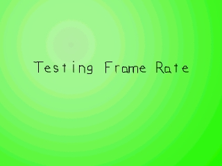

同一个程序，在你的电脑上运行可能是60FPS，但在别人的电脑上可能是200FPS。由于不同电脑间的速度差异很大，所以你必须通过调节帧率来防止游戏运行太快。如果一个游戏运行太快，它将变得不好玩。为了阻止这一点，你必须捕获帧率。译者注：“FPS” 即 “Frames Per Second”，帧每秒，帧率的单位。
本节课正是教你做这个的。
//每秒的帧数 const int FRAMES_PER_SECOND = 20;
我们将每秒的帧数定义为一个全局常量。
//跟踪当前帧的帧计数器
int frame = 0;
//是否限制帧率
bool cap = true;
//帧率调节器
Timer fps;
这是main函数中声明的一些变量。 变量"frame"跟踪了已经过了多少帧，在这个演示程序中，它对于我们决定blit信息表面的位置十分重要。另外，"cap" 变量跟踪了用户是否需要限制帧率。
然后我们声明一个timer对象，用来限制帧率。
然后我们声明一个timer对象，用来限制帧率。
//生成信息表面
message = TTF_RenderText_Solid( font, "Testing Frame Rate", textColor );
现在我们渲染出将在屏幕上移动的信息表面。
//当用户还没退出时
while( quit == false )
{
//启动帧计时器
fps.start();
现在我们进入主循环。在每一帧的开始，我们必须启动我们的帧计时器。
译者注：帧计时器（frame timer），即为每一帧计时的计时器，用于检测和控制程序的帧率。
//当有事件需要处理
while( SDL_PollEvent( &event ) )
{
//如果有一个按键被按下
if( event.type == SDL_KEYDOWN )
{
//如果"Enter"被按下
if( event.key.keysym.sym == SDLK_RETURN )
{
//切换“限制帧率”或“不限帧率”
cap = ( !cap );
}
}
//如果用户单击了窗口右上角的关闭按钮
else if( event.type == SDL_QUIT )
{
//退出程序
quit = true;
}
}
这里我们进行事件处理。这里主要做了两件事：一是当用户按下“Enter”键时打开或关闭FPS限制，二是当用户单击了窗口右上角的关闭按钮时退出程序。
实际上，当你在一个实际的游戏中限制帧率时，不必使用一个变量来打开或关闭帧率调节，但在这个程序中，我们有这么一个变量，这样可以让你看到经过调节和未调节的帧率之间的区别。
实际上，当你在一个实际的游戏中限制帧率时，不必使用一个变量来打开或关闭帧率调节，但在这个程序中，我们有这么一个变量，这样可以让你看到经过调节和未调节的帧率之间的区别。
//应用背景表面
apply_surface( 0, 0, background, screen );
//应用信息表面
apply_surface( ( SCREEN_WIDTH - message->w ) / 2, ( ( SCREEN_HEIGHT + message->h * 2 ) / FRAMES_PER_SECOND ) * ( frame % FRAMES_PER_SECOND ) - message->h, message, screen );
然后我们应用背景和信息表面。
不用担心blit信息表面的所有代码。它实际上是以下操作的一个简易实现：
if( frame % FRAMES_PER_SECOND == 0 )
{
//blit到这里
}
if( frame % FRAMES_PER_SECOND == 1 )
{
//blit到那里
}
等等
不用担心blit信息表面的所有代码。它实际上是以下操作的一个简易实现：
if( frame % FRAMES_PER_SECOND == 0 )
{
//blit到这里
}
if( frame % FRAMES_PER_SECOND == 1 )
{
//blit到那里
}
等等
//更新窗口
if( SDL_Flip( screen ) == -1 )
{
return 1;
}
//帧计数器加1
frame++;
然后我们更新窗口，并将帧计数器的值加1。
现在我们完成了所有要为这一帧做的事情。
现在我们完成了所有要为这一帧做的事情。
//如果我们需要限制帧率
if( ( cap == true ) && ( fps.get_ticks() < 1000 / FRAMES_PER_SECOND ) )
{
//休眠一段时间，时长为当前帧的剩余时间。
SDL_Delay( ( 1000 / FRAMES_PER_SECOND ) - fps.get_ticks() );
}
这是我们真正进行帧率限制的地方。
当我们启动一帧时，我们启动了一个计时器来跟踪输出这一帧总共花了多长时间。为了防止这个程序跑得过快，每一帧必须停留一段时间。如果设定了20帧每秒的帧率，那么每一帧必须持续不少于1/20秒的时间。如果帧率被设为60FPS，那么每一帧必须持续不少于1/60秒的时间。由于这个演示程序在20FPS的设定下运行，这意味着我们应该让每一帧持续50毫秒(1000毫秒 / 20帧)。
为了调节帧率，首先我们要检查一下帧计时器的时间是否少于每一帧允许的最小时长。如果比限制时间还长，说明我们要么是准时，要么已经超过了预定时间，所以我们不必去等待。但如果比限制时间短，那么我们就得使用
所以，在这个程序里，如果此时帧计时器时间为20ms，那么我们就得休眠30ms。如果此时帧计时器时间为40ms，那么我们就得休眠10ms，等等。
当我们启动一帧时，我们启动了一个计时器来跟踪输出这一帧总共花了多长时间。为了防止这个程序跑得过快，每一帧必须停留一段时间。如果设定了20帧每秒的帧率，那么每一帧必须持续不少于1/20秒的时间。如果帧率被设为60FPS，那么每一帧必须持续不少于1/60秒的时间。由于这个演示程序在20FPS的设定下运行，这意味着我们应该让每一帧持续50毫秒(1000毫秒 / 20帧)。
为了调节帧率，首先我们要检查一下帧计时器的时间是否少于每一帧允许的最小时长。如果比限制时间还长，说明我们要么是准时，要么已经超过了预定时间，所以我们不必去等待。但如果比限制时间短，那么我们就得使用
SDL_Delay()来休眠一段时间，时长就是这一帧的剩余时间。所以，在这个程序里，如果此时帧计时器时间为20ms，那么我们就得休眠30ms。如果此时帧计时器时间为40ms，那么我们就得休眠10ms，等等。